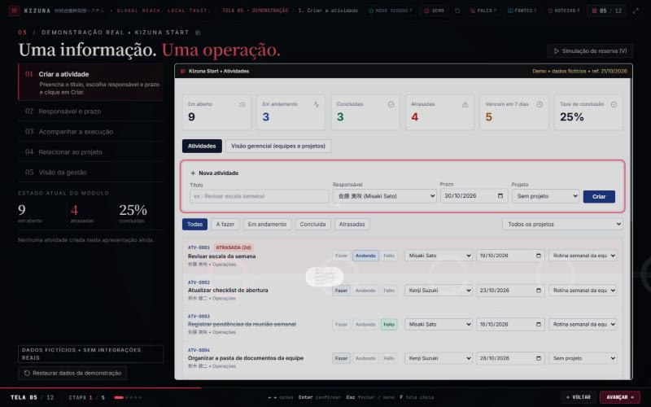
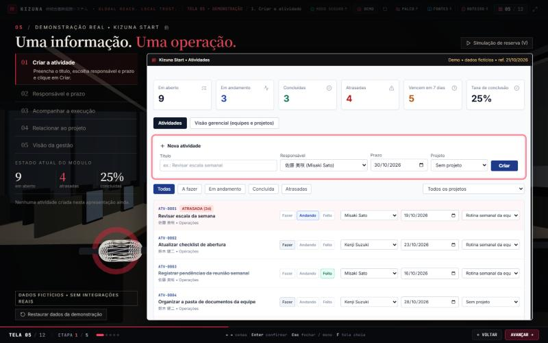
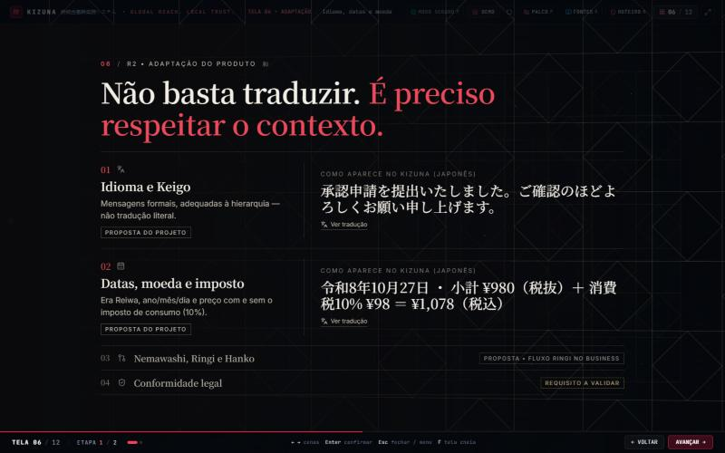
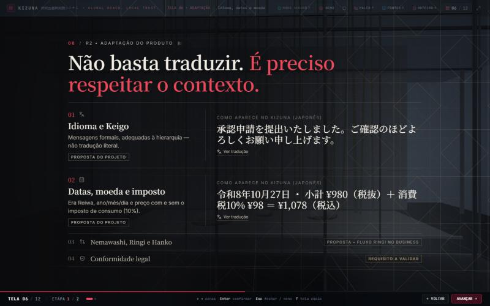
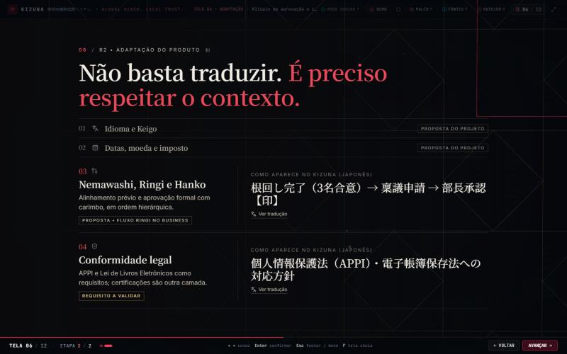
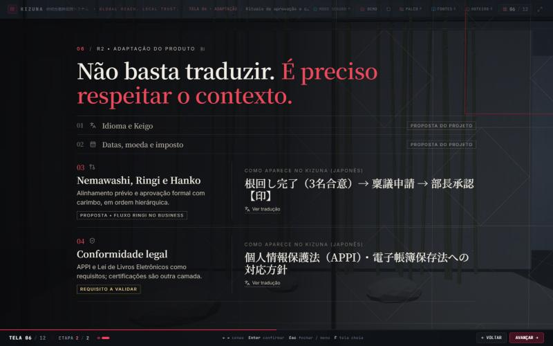
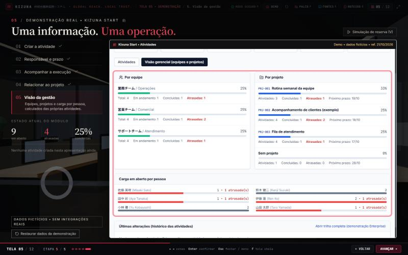
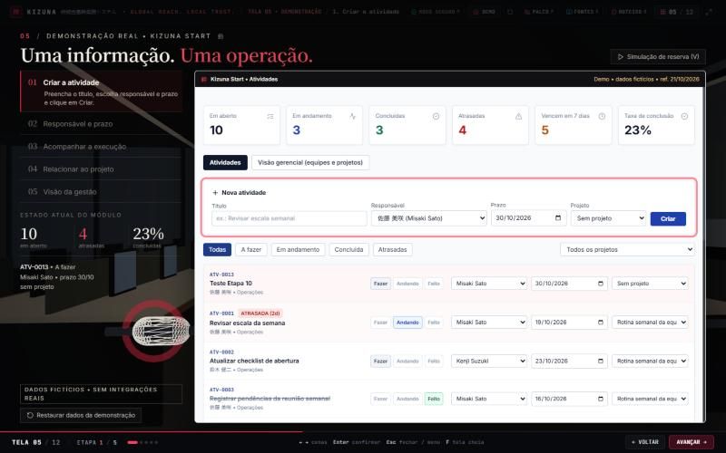
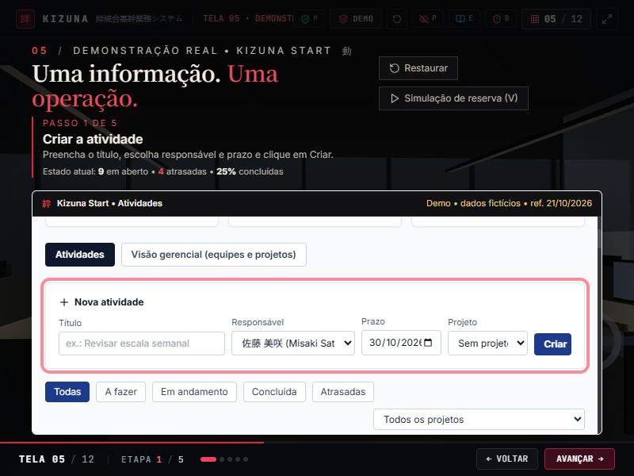
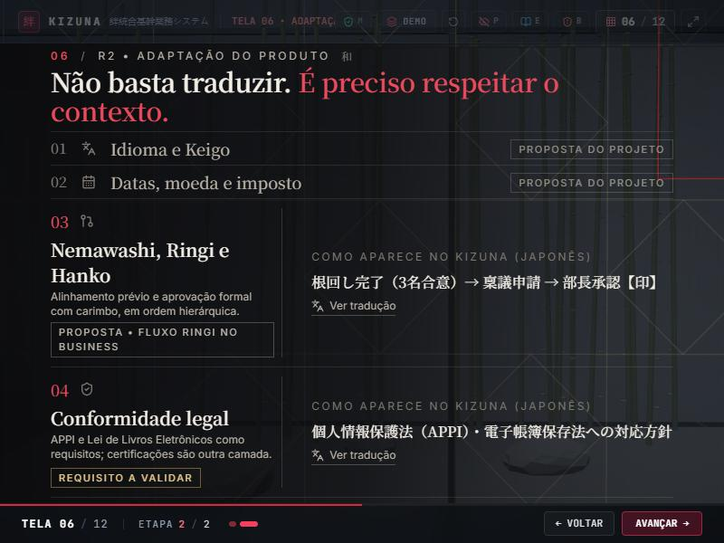

Etapa 10 • Grupo 3 — telas 05 e 06
Tela 05: a demonstração passa a acontecer dentro de um escritório contemporâneo ao anoitecer — duas bancadas de mesas claras com monitores e cadeiras, luminárias lineares pendentes (discretas, para não cruzar o texto), carpete em placas, armários baixos com plantas, sala de reunião de vidro jateado e fachada envidraçada para a cidade. O painel do produto, o trilho de estações e as interações da demo permanecem iguais.
Tela 06 (revista): pavilhão de vidro jateado e alumínio claro em camadas. As duas treliças kumiko passam a ler como gravações em divisórias de vidro jateado com luz própria suave, com reflexo no piso polido; colunas finas afastadas para as bordas (nada pesado atrás do texto); ao fundo, um jardim interno de bambu e pedras sob luz fria — o ecossistema que as camadas integram. A divisória da frente tem um vão central por onde a câmera passa na 06.2. Pilares, traduções e layout permanecem iguais.
Antes × depois • 1440 × 900






Outras resoluções



